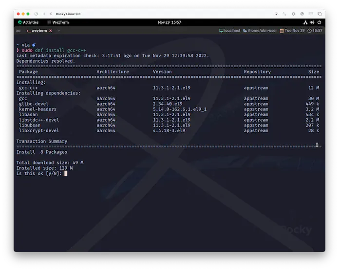
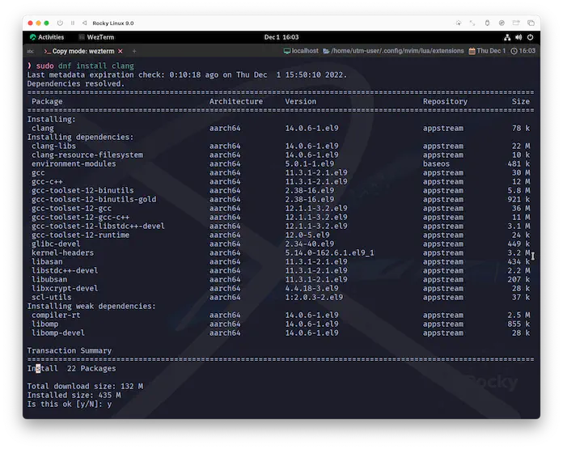
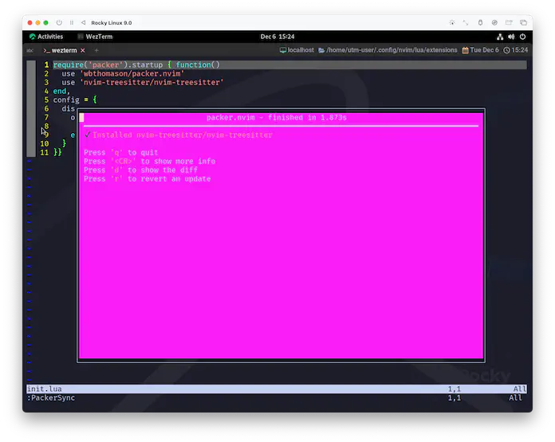
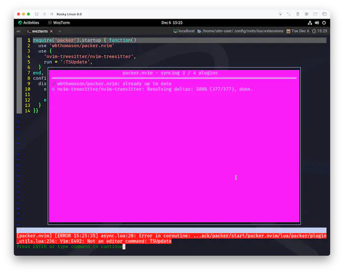
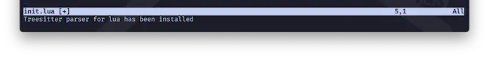
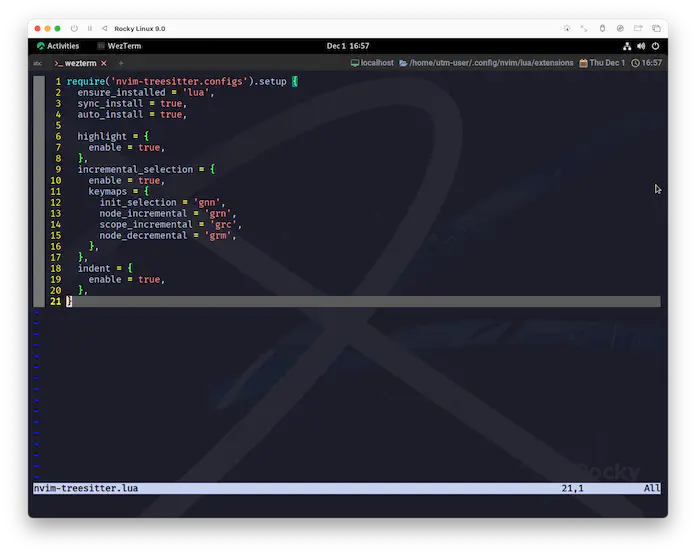
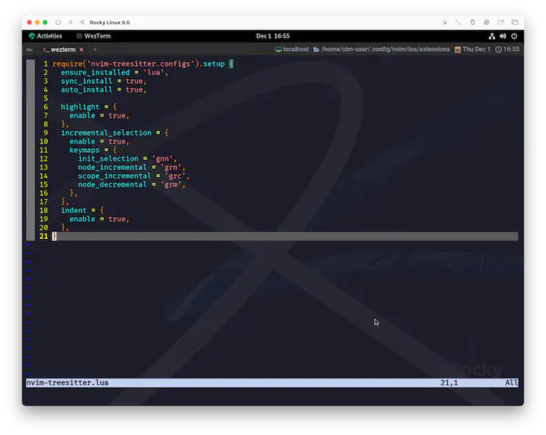

nvim-treesitter
The goal of nvim-treesitter is both to provide a simple and easy way to use the interface for tree-sitter in Neovim and to provide some basic functionality such as highlighting based on it:
nvim-treesitter の目的は、Neovim で tree-sitter のインターフェースをシンプルかつ簡単に使う方法を提供することと、 それを元にハイライトなどの基本的な機能を提供することの両方です。
Neovim 0.8.0 or later built with tree-sitter 0.20.3+ (latest nightly recommended)
tar and curl in your path (or alternatively git)
A C compiler in your path and libstdc++ installed (Windows users please read this!).
Requirements
ここは一個ずつ確認していきます。
Neovim 0.8.0 or later
まずはNeovim 0.8.0 以降が必須とされていることに注意が必要です。
2022-11-30 時点で、stable releaseはもう一つ進んで0.8.1となっていますが、念の為確かめておきましょう。
git (tar,curl)
これはpackerを導入する前に、既にgitをインストールしているはずなので大丈夫😉
気になる場合はtarとcurlも確認しておきましょう。
C compiler
わたしの経験で言えばmacOSでは問題になったことがありません。最低限Command Line Toolsが入っていれば大丈夫なはずです。
(例えばHomebrewのインストール時に自動で導入されます。)
Windowsの場合はやっぱり別途案内
がされているので、そちらを参照頂ければ...。
Linuxの場合、もしかしたら別途インストールが必要かもしれないので手っ取り早く解決方法だけ載っけちゃうんですが、
gcc-c++、もしくはclangをインストールするのが良さそうです。
| gcc-c++ | clang |
|---|---|
|  |  |
Install
前項の確認さえ済めば、あとはpackerにお願いするだけで「あっ❗」と言う間に終わります😆
extensions/init.luaに以下を追記しましょう。
require('packer').startup { function()
use 'wbthomason/packer.nvim'
-- 前節で入れたpackerと同列に並べる
use 'nvim-treesitter/nvim-treesitter'
end,
-- (以下略)
で、:PackerSyncを実行しましょう❗

簡単ですね😉 すっごい見にくいけど❗
nvim-treesitterの説明では、:TSUpdateを併せて行うように説明されているのですが、これはあくまでvim-plugを使用している場合の例です。
packer.nvimではrunオプションで同じことができそうなんですが、これを使用すると初回だけエラーが起きてしまうので、わたしは外しています。

インストール自体は100%でdone.ってなってるし、2回目以降は何事もなかったかのように:TSUpdateまで完走できるんですけどね。すっごい見にくいけど❗
初回だけ外すか、もしくは気にしないかするのであれば超便利です。
use {
'nvim-treesitter/nvim-treesitter',
run = ':TSUpdate',
}
Config
インストールが終わったら、次にやることはコンフィグですね😆
Neovimプラグインの場合、Readmeである程度デフォルト設定が示されていて、
それを基に「変える？変えない？」を決めるみたいな、割とアバウトな方法にどうしてもなってくる...んじゃないかなぁと思ってるんですがどうでしょう❓
(違ってたらごめんなさい😅)
とりあえずは新しくファイルを作っていきます。
これもやっぱり名前は何でも良いんですが、パッケージ名と揃えてnvim-treesitter.luaとしています☺️
require('nvim-treesitter.configs').setup {
ensure_installed = { 'lua' },
sync_install = true,
auto_install = true,
highlight = {
enable = true,
},
incremental_selection = {
enable = true,
keymaps = {
init_selection = 'gnn',
node_incremental = 'grn',
scope_incremental = 'grc',
node_decremental = 'grm',
},
},
indent = {
enable = true,
},
}
そして、これをpackerの管理下に置いて使います。先ほど書いたnvim-treesitterの読み込み部分を少し書き換えます。
require('packer').startup { function()
use 'wbthomason/packer.nvim'
-- こんな感じで。
use {
'nvim-treesitter/nvim-treesitter',
config = function() require 'extensions.nvim-treesitter' end,
}
end,
-- (以下略)
config = string or function, -- Specifies code to run after this plugin is loaded.
このプラグインがロードされた後に実行するコードを指定します。
再起動もしくは:soでこの状態を反映させてからPackerSyncもしくはPackerCompileを実行しましょう。
すると、nvim-treesitterが動いて、最終的にこんなのが出てきました。

これで、luaファイルが今までよりも賢く色付けされてるはずです。どうでしょう❓
| default | nvim-treesitter |
|---|---|
|  |  |
これは例が面白くないのであれなんですが、オフィシャルイメージを見るとこんなに変わってます❗
...あっちでもluaは変化がわかりにいんですけどね😅
Commands
nvim-treesitterを入れることで使えるコマンドについては、ヘルプだけ示します。
ちなみに、わたしはほぼ:TSUpdateしか使ってません❗ sitter って言うぐらいなので、特に操作しなくてもしっかりお世話してくれます👶
Modules
上の例で使用しているモジュール設定について少しだけ触れておきます。
By default, everything is disabled.
デフォルトでは、すべて無効になっています。
ensure_installed
A list of parser names, or "all"
パーサ名のリスト、または "all"を指定する。
上の例ではluaだけ入れてます。使用頻度の高い言語を入れておくと良いです。
面倒ならallでも良いんですが、auto_installがあるので、"オフライン環境で動かす"とかでなければ、そちらを活用する方が良いんじゃないかなーって思ってます。
対応言語は以下の通りです。
List of languages for which a parser can be installed through :TSInstall
:TSInstallでパーサをインストールできる言語のリストです。
sync_install
Install parsers synchronously. (only applied to `ensure_installed`)
パーサを同期的にインストールする。 (`ensure_installed` にのみ適用される)
「同期的インストール」...、つまりアップデートですね😉
auto_install
Automatically install missing parsers when entering buffer.
バッファに入ったときに足りないパーサを自動的にインストールします。
highlight
`false` will disable the whole extension
false` を指定すると、拡張機能全体を無効にすることができます。
と、いうことなので、
highlight = {
enable = false
}
...なんてしちゃえば拡張機能全体を無効にします。いや、せっかく入れたのでtrueにしましょ❓
ちなみにdisableオプションを使うと、特定の言語だけ選んで除外できます。
highlight = {
enable = true,
disable = { "c", "rust" },
},
incremental_selection
これについては、適当にコードを開いてkeymapに設定した操作をしてみればなんとな〜く察せると思います。
ざっくり言うと、以下の説明にある範囲選択が一回で出来ます。
Incremental selection based on the named nodes from the grammar.
文法からの名前付きノードに基づくインクリメンタルな選択。
- keymaps:
- init_selection: in normal mode, start incremental selection.
ノーマルモードで、インクリメンタルな選択を開始します。
- node_incremental: in visual mode, increment to the upper named parent.
ビジュアルモードで、上の名前の親にインクリメントします。
- scope_incremental: in visual mode, increment to the upper scope (as defined in `locals.scm`).
ビジュアルモードで、上のスコープにインクリメントされます。
(`locals.scm` で定義されている) 上位のスコープにインクリメントします。
- node_decremental: in visual mode, decrement to the previous named node.
ビジュアルモードで、前の名前のノードまでデクリメントします。
indent
実験的な機能らしいですが、インデントが賢くなる...んです⁉️ あんまり威力を実感することはないんですが、わたしはなんとなく使ってます😅
これもhighlightと同じく、言語を選んで除外できます。
Indentation based on treesitter for the |=| operator.
|=| 演算子の treesitter に基づくインデント。
NOTE: this is an experimental feature.
これは実験的な機能です。
Query files: `indents.scm`.
Supported options:
- enable: `true` or `false`.
- disable: list of languages.
CheckHealth
これはnvim-treesitterに限らないNeovimの機能になりますが、healthチェックというものがあります😉
health.vim is a minimal framework to help users troubleshoot configuration and
any other environment conditions that a plugin might care about.
health.vim は、プラグイン設定やその他の環境条件の
トラブルシューティングを支援するための最小限のフレームワークである。
Plugin authors are encouraged to write new healthchecks. |health-dev|
プラグインの作者は新しいヘルスチェックを書くことが推奨されている。
コマンドは:h health-commandsにある通りです。試しに動かしてみましょう。
:che
または
:checkhealth
結果が表示されましたね☺️
診断内容はプラグインに依りますが、nvim-treesitterの場合は、依存ソフトウェアの確認と、OS情報・インストールされたパーサの表示を行ってくれます。
これもヘルプそのままですが、指定したプラグインだけを診断することも可能です。
:che nvim-treesitter
とすると、nvim-treesitterのヘルスチェックのみを行えます。
冒頭の説明では環境条件と表されていますが、packerの節で少し触れた依存関係と (大体は) 同じ意味でしょう。
プラグインによっては、今回のようにヘルスチェックを提供してくれているので、困った時はこれも参考にすると良いです😉